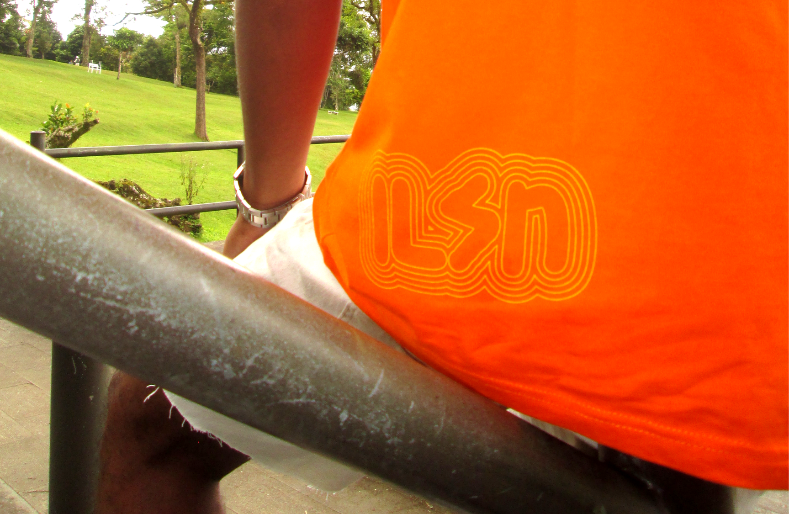

.png)
Catalog Unexpected is the third volume project from the clothing brand illusion.bali. This catalog targets markets such as skateboarding, bands, BMX, and surfing.
The design of this catalog focuses more on using vector and bitmap designs, where each object and element carries a philosophy that can be interpreted individually by the user. This catalog is inspired by streetwear culture from the 1980s. The reason for creating this catalog is to revive the existence of streetwear design,allowing users
to wear 1980s fashion with a modern touch without losing its vintage feel. We hope that with Cata log Unexpected, consumers can experience the fashion style of the 1980s once again.

Catalog Unexpected is the third volume project from the clothing brand illusion.bali. This catalog targets markets such as skateboarding, bands, BMX, and surfing.
The design of this catalog focuses more on using vector and bitmap designs, where each object and element carries a philosophy that can be interpreted individually by the user. This catalog is inspired by streetwear culture from the 1980s. The reason for creating this catalog is to revive the existence of streetwear design,allowing users
to wear 1980s fashion with a modern touch without losing its vintage feel. We hope that with Catalog Unexpected, consumers can experience the fashion style of the 1980s once again.
.gif)